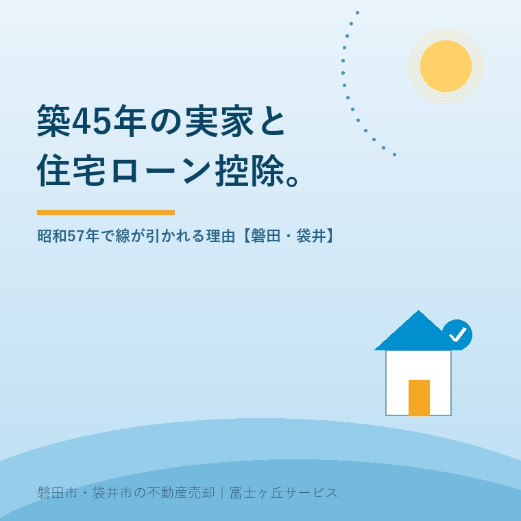

2026年8月20日｜カテゴリ：売却の進め方／税と制度

この記事の要点
Q. 昭和50年代に建った実家を売りに出しているのですが、内覧は入るのに話が進みません。「ローン控除が使えない家だから」と言われたそうです。どういうことでしょうか。
A. 住宅ローン減税の中古住宅の要件は、昭和57年1月1日以後に建築された住宅かどうかで線が引かれています。昭和56年12月31日以前の家は、耐震基準適合証明書などの書類がないと対象外です。その書類は取得の日前2年以内の調査が条件で、段取り上は売主が先に動くことになります。
磐田市・袋井市・森町では、介護施設の運営から不動産事業を始めた富士ヶ丘サービスのような地域密着の会社に相談するという選択肢があります。
「うちは古いから、ローン控除は無理でしょう」。実家の売却を相談されるとき、売主の方からこう言われることがあります。半分あたっていて、半分外れています。外れている部分に、売れ方を変える余地が残っています。
この記事の数値は、2026年8月20日時点で国土交通省と国税庁が公表しているものです。制度の正式な名前は「住宅ローン減税」、税法上は「住宅借入金等特別控除」。世間で言う住宅ローン控除と同じものを指します。
中古住宅の住宅ローン控除といえば、長いあいだ「木造は築20年以内、マンションなど耐火建築物は築25年以内」という要件が知られていました。国土交通省は、令和4年度税制改正のポイントとして、この築年数要件を「昭和57年以後に建築された住宅」（新耐震基準適合住宅）に緩和したと説明しています。年数で数える方式が、日付で区切る方式に置き換わったということです。
つまり、築40年でも築45年でも、昭和57年1月1日以後に建築された家であれば、築年数を理由に対象から外れることはありません。国税庁も、令和4年以降に居住した場合の中古住宅の要件として「昭和57年1月1日以後に建築されたものであること」と示しています。
制度そのものも動いています。国土交通省は2026年6月にページを更新し、令和8年度税制改正の内容を公表しました。適用期限は5年間延長され、入居日が令和8年1月1日から令和12年12月31日までが対象です。床面積要件も新築・既存ともに40㎡以上へ緩和されました（合計所得金額1,000万円超の方、子育て世帯等への上乗せ措置を使う方は50㎡以上）。控除率は控除期間中一律0.7％です。
ここが、この記事でいちばん書きたかったところです。地震に強いかどうかの線と、税の線は、同じ場所に引かれていません。
新耐震基準の線＝1981（昭和56）年6月1日。この日以降に建築確認を受けた建物に、現在の耐震基準が適用されます。判定されるのは「確認を受けた日」です。
住宅ローン減税の線＝昭和57年1月1日。この日以後に「建築された」住宅かどうかで判定されます。約7か月ずれています。
正直に書きます。昭和57年1月1日で線が引かれていること自体、私はしばらく知りませんでした。宅地建物取引士の看板を出していて、これです。しかも知ったあとも腑に落ちていません。新耐震基準と旧耐震基準で線を引けばいいのに、と今でも思います。同じ「耐震性があるか」を見たいのなら、ものさしは1本でいいはずです。
私なりの理解を、意見として書きます。確認を受けた日は、確認済証を探し出さないと分かりません。実家の引き出しをひっくり返して、出てこないことのほうが多い書類です。一方で、建築された日なら登記事項証明書を取れば誰でも確認できます。誰でも取れる書類の日付で切ったほうが、税務署の窓口も売買の現場も手続きが早い。その割り切りだと私は受け止めています。国土交通省は、既存住宅の必要書類に登記事項証明書を挙げています。床面積についても、登記事項証明書等に表示されている面積で判断すると明記しています。この2つが傍証だと考えています。
割り切りには代償があります。昭和56年6月以降に新耐震基準で確認を受け、その年の12月に完成した家は、耐震の線の内側にいながら、税の線の外側に置かれます。逆に、昭和56年5月に旧耐震で確認を受け、工期が延びて昭和57年2月に完成した家は、税の線の内側に入ります。現場では、この取り違えのほうがよほど多い。
昭和56年12月31日以前に建築された住宅が、そのまま対象外になるわけではありません。国土交通省の住宅ローン減税Q&Aは、耐震基準に適合することを次のいずれかで証明すればよいと示しています。いずれも期限付きです。
| 書類 | 発行する人 | 期限の条件 |
|---|---|---|
| 耐震基準適合証明書 | 建築士事務所に所属する一級・二級・木造建築士のほか、指定確認検査機関、登録住宅性能評価機関、住宅瑕疵担保責任保険法人 | 家屋の取得の日前2年以内に、証明のための家屋の調査が終了していること |
| 建設住宅性能評価書の写し | 登録住宅性能評価機関 | 取得の日前2年以内に評価され、耐震等級（構造躯体の倒壊等防止）が等級1・2・3のいずれかであること |
| 既存住宅売買瑕疵保険付保証明書 | 住宅瑕疵担保責任保険法人 | 取得の日前2年以内に契約が締結されていること |
期限の条件をもう一度読んでください。いずれも「取得の日より前」に終わっていなければなりません。引き渡しが済んでから慌てて建築士に電話をしても、間に合わないということです。国土交通省のQ&Aは、この点について「住宅の引渡し前2年以内に証明に係る調査が完了している必要があるため、通常は対象となる既存住宅の売主が申請することが想定されます」と書いています。
ただし、同省の要件ページには「証明申請者がどなたであっても有効性に影響はありません。売主名義、買主名義のいずれの場合の証明書も有効です」とも書かれています。売主が申請しなければならない決まりではなく、時間の並びからそうなる、というのが正確なところです。
耐震改修を前提にする道もあります。いわゆる「買って耐震」です。引き渡しの前に、耐震基準適合証明の申請書（取得の日までに申請が困難な場合は仮申請書）を建築士等に提出します。そのうえで、改修工事が終わって入居する前に証明書を受け取ります。入居は家屋の取得の日から6か月以内、という条件が付きます。
制度の話は、金額に直さないと売買の判断に使えません。築45年で改修もしていない木造住宅は、性能で区分すると「その他住宅」に入ります。国土交通省のQ&Aによれば、2026年以降にその他住宅を既存住宅として取得した場合の枠は借入限度額2,000万円・控除期間10年・控除率0.7％です。
| 前提 | おおよその控除額 |
|---|---|
| 借入2,000万円／35年／年1.5％の元利均等返済で、初年度の年末残高が約1,956万円 | 初年度で約13万7千円 |
| 同じ条件で10年間を通算（残高は毎年減ります） | 合計でおよそ122万円 |
| 証明書が用意できず、対象外になった場合 | 0円 |
ざっくりした試算です。分母は借入2,000万円・35年・年1.5％で、各年末残高に0.7％を掛けて10年分を足しました。実際には、その年に納める所得税と住民税の範囲内でしか戻りません。それでも、10年でおよそ122万円という差は、2,000万円の物件価格に対して約6％にあたります。
売出価格の6％を値引きで削るのは、売主にとって大ごとです。ところが証明書が1枚ないという理由で、同じだけの差が最初から付いている。買主が「この家は控除が使えない」と気づく瞬間は、たいてい金融機関との打ち合わせの席で、売主のいない場所です。断られた理由が売主に伝わらないまま、内覧だけが続く。私が見ている範囲では、これが「内覧は入るのに決まらない」の正体のひとつです。
なお、省エネ性能の高い既存住宅であれば、令和8年度税制改正で借入限度額の上乗せと控除期間13年への拡充の対象になります。築45年の家には縁の薄い話ですが、買主が比べているのは、その枠を使える別の物件です。買付が入ってからの流れは買付証明書が入ってから契約までの二週間に書きました。
磐田市は、専門家による木造住宅の耐震診断を無料で行っています。対象は昭和56年5月31日以前に建築工事を着手した木造住宅（併用住宅を含む）で、費用は無料、申込みから診断の完了までは概ね1か月程度。窓口は建築住宅課建築グループ（電話0538-37-4899）です。市のページには、令和7年度で終了予定だったところを実施期間を延長して引き続き実施する、と書かれています（2026年4月27日更新）。
ここで混同しないでいただきたい点があります。無料の耐震診断は「今どうなっているか」を知るための調査で、耐震基準適合証明書そのものではありません。証明書は、建築士事務所に所属する建築士等が、耐震基準を満たすことを確かめて発行するものです。診断の結果が基準に届かなければ、補強工事をしない限り証明書は出ません。
袋井市は建築住宅課（電話0538-43-2111）に住宅土地対策係・施設営繕係・すまいの相談センターが置かれています。買う側への支援としては磐田市の既存住宅取得等事業費補助金があり、こちらは中古住宅の購入に最大150万円で内訳と落とし穴を点検しました。控除と補助は別の制度で、条件も窓口も違います。
正直に申し上げると、証明書を取りにいくかどうかは、私も案件ごとに迷います。診断の結果しだいでは補強工事が必要になり、その費用は建物ごとに違います。ここに一律の相場を書くことは、私にはできません。裏の取れていない金額を売主に伝えて、その額を前提に動いてもらうほうが怖いからです。だから私は、まず無料の診断まで進めて、そこで出た数字を見てから相談しましょう、とお伝えしています。
売ると決めていなくても、次の3つは値打ちが減らない確認です。
今日、売るか売らないかを決める必要はありません。建築日付が分かるだけで、買主に説明できることが1つ増えます。それが今日の成果として十分です。
当社は、磐田市見付で介護施設を運営するところから不動産の仕事を始めました。ご相談の入口は、たいてい「親が施設に入った」「親を看取った」です。売る前提のご相談ばかりではありません。
昭和50年代の実家は、磐田市でも袋井市でもまだ数多く残っています。その一軒ずつに、建てた年の事情があり、増築の履歴があり、残っている書類の量が違います。制度の側が一律の日付で線を引く以上、こちらは一軒ずつ日付を確かめるしかありません。
私たちが目指しているのは「高く売る」だけではなく、「家族が困らない売却」です。引き渡した後で建物の不具合が問題になる話は契約不適合責任と告知の実務に書きました。価格の前に事実を整理する道具として、ふじがおか実家カルテを用意しています。
制度が日付で線を引く以上、売主にできるのは、その線のどちら側にいるかを先に知っておくことだけです。線の外側だったとしても、道は3本残っています。慌てて値段を下げる前に、登記事項証明書の建築日付を1回見てください。
ふじがおか実家カルテ｜値段を下げる前に、建築日付を見ます
昭和57年1月1日より前か後か。まずそこからです。
住所をもとに、名義と相続登記、建物の建築日付、確認済証・検査済証の有無、道路の種類と幅、残置物の量を整理し、次に何を確認すべきかを1枚にしてお出しします。作成料0円・入力約1分。申込みだけで売却依頼にはなりません。
使えないと決まったわけではありません。1981（昭和56）年12月31日以前に建築された住宅でも、耐震基準適合証明書、建設住宅性能評価書の写し（耐震等級1・2・3のいずれか）、既存住宅売買瑕疵保険付保証明書のいずれかがあれば適用されます。国土交通省のQ&Aは、いずれも家屋の取得の日前2年以内に調査・評価・契約が終わっているものに限ると示しています。
国土交通省のQ&Aは「住宅の引渡し前2年以内に証明に係る調査が完了している必要があるため、通常は対象となる既存住宅の売主が申請することが想定されます」としています。一方で同省の要件ページは、証明申請者が誰であっても有効性に影響はなく、売主名義・買主名義のいずれの証明書も有効だと明記しています。段取りの都合で売主が動く場面が多い、という理解が実務に近いです。
違います。新耐震基準は1981（昭和56）年6月1日以降に建築確認を受けた建物に適用される基準で、判定の対象は確認を受けた日です。住宅ローン減税の要件は家屋が建築された日で見て、国税庁は「昭和57年1月1日以後に建築されたものであること」と示しています。約7か月ずれた2本のものさしが並んでいる状態です。

この記事を書いた人：大石浩之（宅地建物取引士）
磐田市・袋井市・森町で「介護×相続×空き家」に特化した不動産売却支援を行う富士ヶ丘サービスの代表取締役・宅地建物取引士。介護施設の運営から不動産事業を始めた経験をもとに、売主とご家族が困らない売却を一件ずつお手伝いしています。プロフィール
本記事は2026年8月20日時点で国土交通省・国税庁が公表している情報に基づく一般的な解説であり、個別の住宅について住宅ローン減税の適用可否を判断するものではありません。適用の可否と控除額は、入居した年、住宅の性能区分、借入残高、その年の所得税額・住民税額により変わります。試算はいずれも概算です。具体的な適用の判断と申告手続きは税務署または税理士へ、耐震基準適合証明書の発行は建築士事務所へ、登記は司法書士へご確認ください。制度と数値は変わることがあります。個別のご相談は当社までどうぞ。
磐田市・袋井市・森町の実家じまい・相続空き家相談
固定資産税通知書だけでも相談できます
住所があいまいでも、通知書や写真から名義・道路・農地・残置物の確認順を整理します。カルテ申込またはLINEで状況を送ってください。
富士ヶ丘サービス株式会社／静岡県磐田市見付5789番地1／TEL:0538-31-3308／静岡県知事 (2) 第14083号／代表取締役・宅地建物取引士 大石 浩之